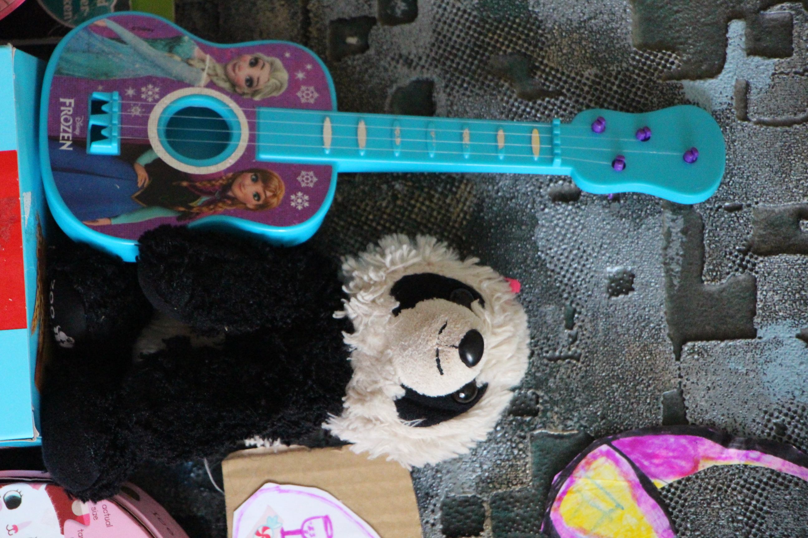
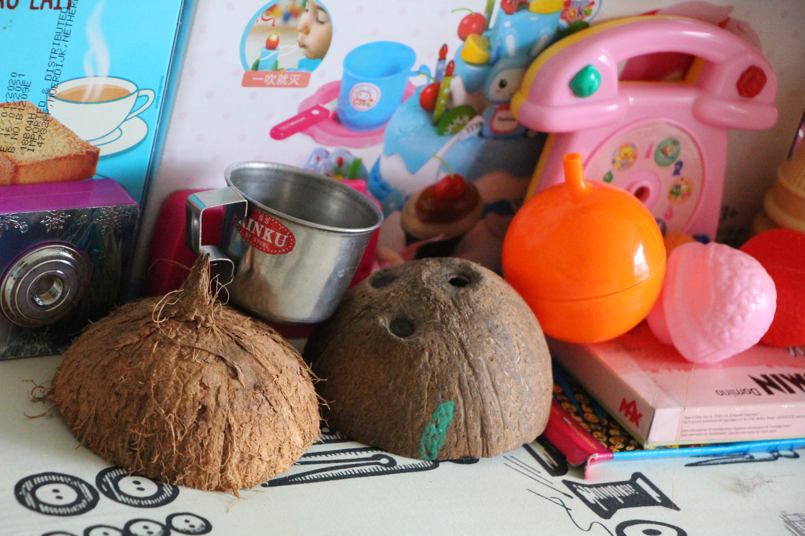
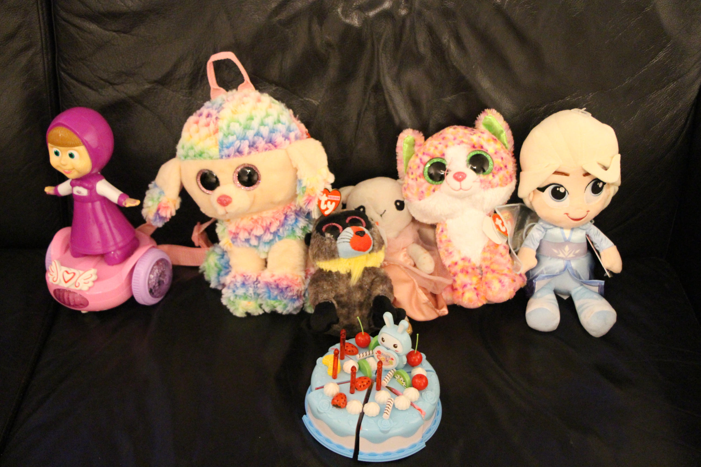
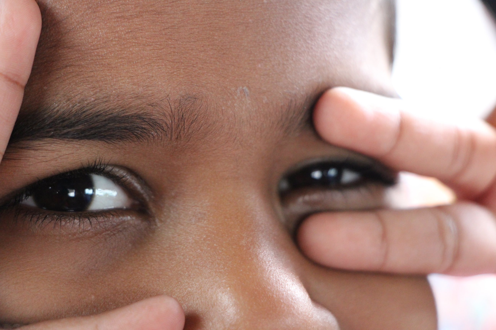

Your reading @ myself and it is previlige to interact with you,
In Tamil language the word "Vanakam" - meaning wholehearted "Respecting and Greeting you"
Vanakam to all and I am Raj @ SaravanarajSamu
Professional - My IT career was started as a developer in Sep - 2007. It was traversed through multiple technological platforms, business domains, challenges,end-users. I would like to contribute to business development and support users for their needs.
Experiences and Skill Set:
| Platform | Nature of system and Applicatons |
|---|---|
| Development | Java,Oracle,Business Intelligence,SAS and Mainframe systems |
| Requirment Analysis and Implementation | Business Analyst,Agile Scrum and Lean process |
| Testing | Unit,System and Integration |
| Application Support | Level 1,2,3 and Incident / problem / Change Management |
| Data Analytics | OBIEE and Microsoft Power BI |
| CRM | MS Customer Relatiion Management |
| Cloud | GCP Paas |
Valuable gifts - Leaving time bheind me to my daughter and earning the title "Awesome Daddy" 💕 with below medals and smile
🍦
   🍭
Photography - Any relation between these objects and us - "Yeeeeeeesss It is there" 🗯 My learning through my own picks
A little description - My favorite books are IKIGAI, When things fall apart, Emotional intelligence, and Healthy smile. At times I give importance to the imagination and inner voice which has the power to know about ourselves and our life journey. I have shifted to Sweden from India in Nov 2019 when the pandemic started and its new journey which thought me lifeful Experiences and changes. So everyone must try for a complete change and if possible for life detoxification.
Social Responsibility - After the Pandemic I have changed my thought process and planned to start a blog where I can meet with people to interact for a healthy surrounding, eliminate stress, restructure the lifestyle to avoid a victim of another global pandemic. The Idea is not realistic but hopes we can work for the change altogether. I have also planned to add my regular life social events which may help others.
Futuristic Plan - I would like to start an interactive healthy community website that will forecast details, pieces of information, ideas, thoughts about lifestyle for various people starting from kids to old age people. As society is getting changed to a fast phase, people need quality information and someone to talk to them for healthy words. I firmly believe that everyone needs a trusty person who resembles themselves at least to hear their inner need.
As of now, I am stopping here, but I will update my information over some interval time __Raj.